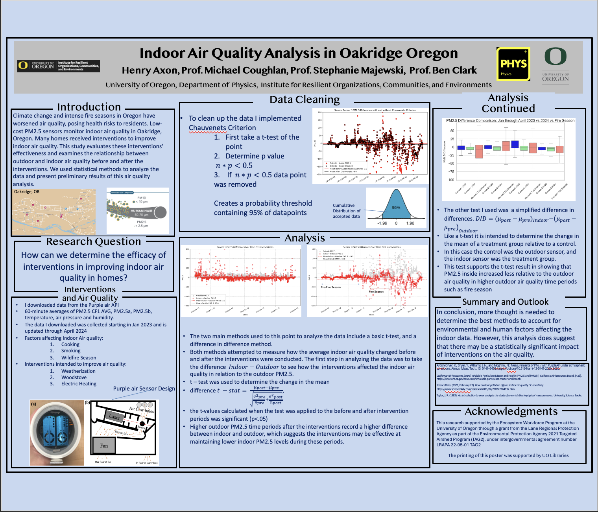
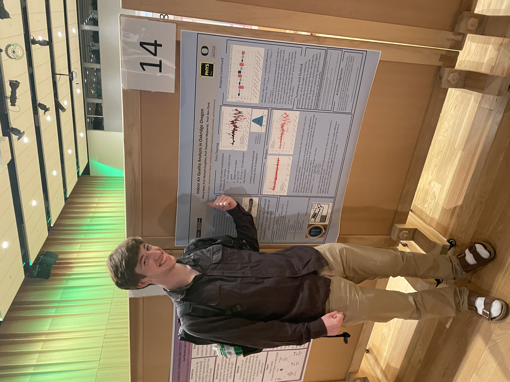
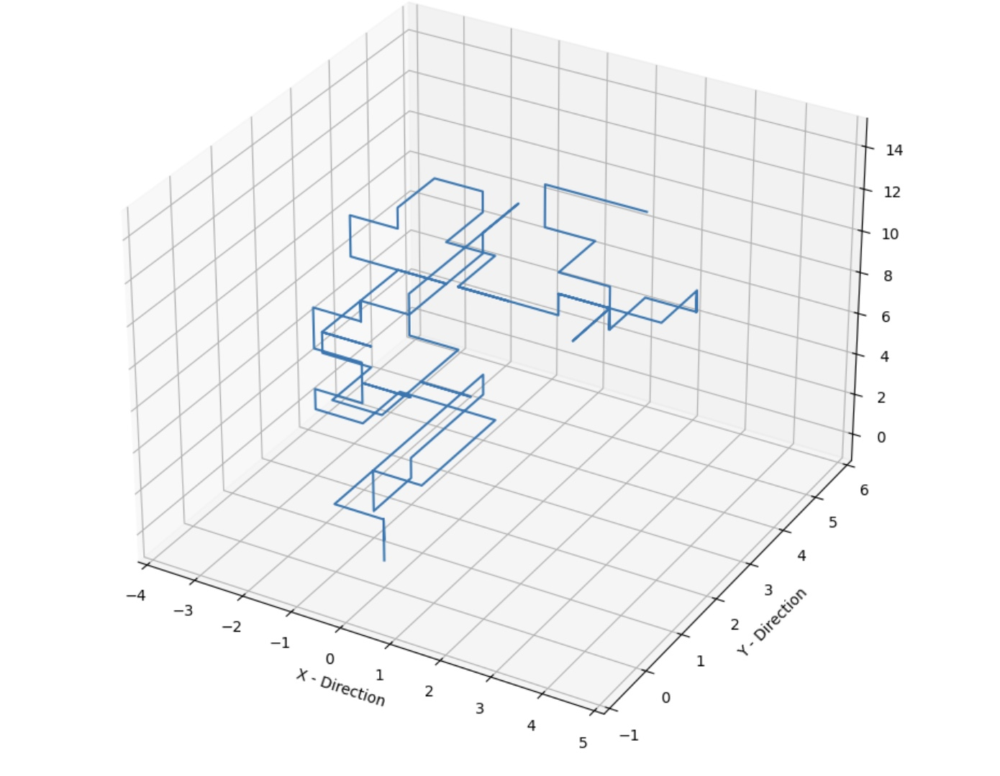

Indoor Air Quality Analysis in Oakridge Oregon  
For my most recent research project, I worked with Prof. Michael Coughlan from the anthropology department ,and Prof. Stephanie Majewski from the physics department to use purpleair low cost air quality sensors to measure and analyze the effect of home interventions on the air quality. In order to do this I had to determine a way to clean the data, and to plot it in an effective and coherent way. To clean the data I applied Chauvenets Criterion to remove outlying points. I used python to analyze the data, and my results are recorded in LaTeX and archived in the UO Scholars Bank. My work culminated in a research poster presentation at the University of Oregon Uncergrad Research Symposium. The python code is also in the GitHub profile listed on the home page.
3D Random Walk Animation
This was a small coding project, where I took a 1D random walk program I created for a Stat Mech and expanded it to 3D. I then animated it, and this is a 1000 step run of the program. The code is on GitHub.